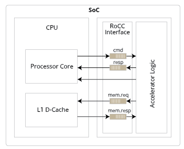
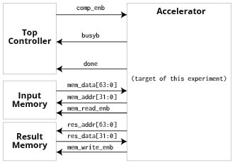
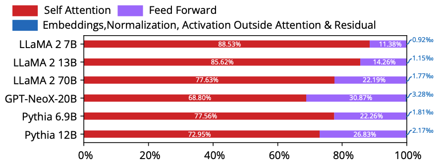
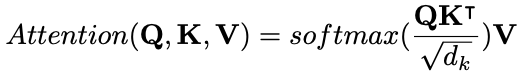
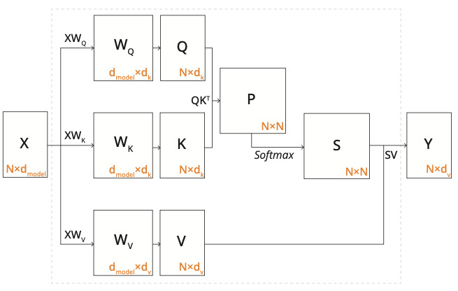

实验8、矩阵乘法器及设计优化（课程竞赛大作业）
【实验8没有练习与提交的东西，只是为了熟悉加速器设计流程与环境配置】
目标：加速矩阵乘法
硬件加速器的系统接口
以RISC-V CPU提供的协处理器接口为：【图1】

其中：
cmd: CPU给出的指令
resp: 加速器返回的指令
mem.req：加速器要求的数据（以指令或中断形式发出），一般为加速器输入
mem.resp: CPU cache返回的数据，一般为加速器输出的计算结果
但是!为了避开CPU设计应答的部分（以后《计算机系统架构》或相似课程会学的），本实验我们用一个简单的接口来实现：【图2】

为什么硬件加速？
如果用Python软件来计算Lab5中的向量-矩阵乘法（Y=X·W，结果维度应为1×2）：
import numpy as np
import time
x = np.matrix(np.random.randint(1, 15, size=(1, 3)), dtype=np.uint8)
w = np.matrix(np.random.randint(1, 15, size=(3, 2)), dtype=np.uint8)
times = np.zeros(1000)
for i in range(1000):
startTime = time.time()
y = x * w
times[i] = time.time()-startTime
print(f"Time taken for matrix multiplication: \n{times.mean()} sec")
用我的M1 Pro芯片跑出来的结果为平均耗时1.809835433959961e-06 sec，即约为1.8us；
而Lab5的组合逻辑电路，如果用20ns周期频率单周期即可完成，加速比为1.8us/20ns≈90倍。
当然，现代处理器一般会面临“存储墙”问题，即数据传输速度比计算速度要慢，因此还需要像上面图2一样的数据传输接口。
具体问题
即然大语言模型这么火，那么我们就来做一个大模型加速器（部分）吧！由于【图3】：

所示，Self-Attention算法模块的参数量占了绝大多数计算操作数，所以我们先仅关注Self-Attention的计算。那么Self-Attention模块的计算表达式为：

如果用流程图来表示，它做的计算为：

简化版问题（目标问题）
其中W_Q, W_K, W_V预存的参数，Softmax非线性激活函数如果先忽略，所以其实我们需要定制一个【图4】
其中W_Q（模型训练参数）, W_K（模型训练参数）, W_V（模型训练参数）, X（vectorized token）为已知输入，我们来设计一个加速器完成图4公式计算功能。
注：
一切手段都可以用，但是要满足以下条件
设所有的操作数均为SINT8，不考虑溢出情况
Input Memory与Result Memory的数据排布方式由你决定，稍后会提供testbench
设所有的矩阵维度均为512×512
全世界只有一个1ns~2ns的时钟。注意，是仅能用一个时钟，但是它的频率可以在1ns~2ns之间任意选择，精确到小数点后2位。
SRAM memory读延迟<1ns, SRAM的IO port最多为256bit宽，最少可为8bit宽，单个SRAM instance最大容量为1Mb，可用的instance number数量不限；可简单认为SRAM的面积正比于容量
最终加速器评分要求：
计算功能正确
稍后会提供示例W_Q, W_K, W_V, X矩阵【待定】
在计算功能正确的情况下，综合PPA得分计算公式为：
alpha×power/C0+beta×latency/C1+gamma×area/C2+delta*calculation_loss/C3
alpha, beta, gamma为归一化权重，例如alpha=0.2, beta=0.4, gamma=0.4 (2024年)
C0 (unit:W), C1 (unit:sec), C2 (unit:um^2), C3 (unit:1)为示例归一化参考值，稍后提供【待定】
latency计算方法为从comp_enb的下降沿开始计算，到busyb的上升沿的绝对时间（单位：ns）;也可以是cycle number×shortest clock period (target freq-slack)
逻辑综合后critical path setup time slack>0
用到的DFF的PPA都在syn report里，用到的SRAM macro需要单独算
综合的时候请剔除SRAM macro，不然会很大
input memory, result memory与top controller不计入PPA计算
需要用多大的SRAM，它的面积与功耗值请联系燕老师获得
Top Controller, Input Memory与Data Memory不计入最终PPA评分，我们只看accelerator
接下来每周可进行≤1次提交打榜（联系燕老师提交syn report），看一下自己的设计在得分榜多少位
最后课程成绩相关的（竞赛大作业部分）评分规则：
竞赛大作业部分总分23分
如功能未实现大作业部分为0分
在实现功能后，此部分最低13.80分、最高23.00分，个人最终得分与排名或PPA综合得分绝对值有关，具体评分方式【待定】
截止日期2024年7月15日晚11:58:59，提交：
设计报告
设计与测试代码
综合用脚本syn.tcl
PPA报告
Note
提示 千万不要一下子一大坨top，一定要分层(hierarchical)一点一点写然后instantiate各个小block再拼起来
Note
提示 加速器框架见 lab8_framework.tar.gz
本课程后面每节课，会简介优化方法
时序收敛方法、脉动阵列架构、bit-serial乘法、稀疏计算优化……